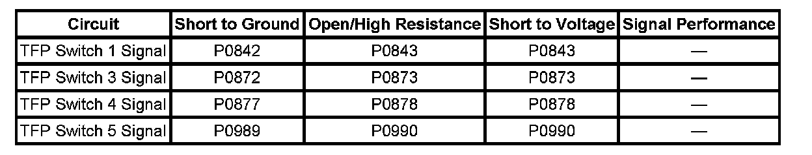
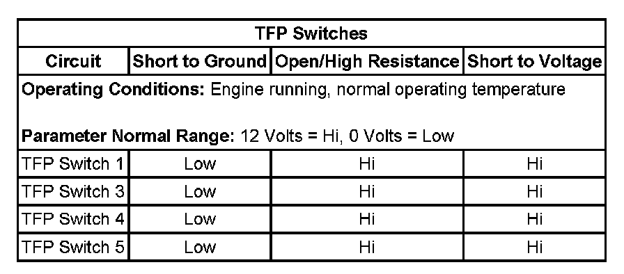

P0877
DTC P0877 or P0878
DTC Descriptors
DTC P0877
Transmission Fluid Pressure (TFP) Switch 4 Circuit Low Voltage
DTC P0878
Transmission Fluid Pressure (TFP) Switch 4 Circuit High Voltage
Diagnostic Fault Information
Perform the Diagnostic System Check - Vehicle prior to using this diagnostic procedure. Initial Inspection and Diagnostic Overview

Typical Scan Tool Data

Circuit/System Description
The transmission fluid pressure (TFP) switch 4 is part of the control solenoid (w/body and TCM) valve assembly and is not serviced separately. The TCM supplies 12 volts to the TFP switch 4 on the TFP switch 4 signal circuit; the TFP switch 4 has an internal case ground. TFP switch 4 is normally closed, Low. When oil pressure is present at the TFP switch 4, the switch is open, high. The normally low clutch pressure control (PC) solenoid 4 controls the transmission fluid to the 1-2-3-4 clutch. The TCM monitors the normally closed TFP switch 4 signal circuit to determine the 1-2-3-4 clutch status.
Conditions for Running the DTC
^ No DTCs P0120, P0711, P0712, or P0713.
^ No DTCs P0965, P0966, P0967, P0968, P0969, P0970, or P0971.
^ No DTCs P0973, P0974, P0976, P0977, P2719, P2720, P2728, P2729, or P2730.
^ No DTCs P1825 or P1915.
^ Ignition voltage is between 11-15 volts.
^ The transmission fluid temperature (TFT) is 20-150° C (68-302° F).
Conditions for Setting the DTC
DTC P0877
The TCM detects that the TFP switch 4 signal voltage remains low, 0 volts when the 1-2-3-4 clutch is commanded ON, then the TCM sets DTC P0877.
DTC P0878
The TCM detects that the TFP switch 4 signal voltage is high, 12 volts when the 1-2-3-4 clutch is commanded OFF, then the TCM sets DTC P0878.
Action Taken When the DTC Sets
^ DTCs P0877 and P0878 are Type C DTCs.
^ The TCM freezes transmission adaptive functions.
Conditions for Clearing the DTC
DTCs P0877 and P0878 are Type C DTCs.
Reference Information
Schematic Reference
Automatic Transmission Controls Schematics
Connector End View Reference
^ Automatic Transmission Inline 16-Way Connector End View
^ Automatic Transmission Internal Connector End Views
^ Automatic Transmission Related Connector End Views
DTC Type Reference
^ Diagnostic Trouble Code (DTC) Type Definitions
^ Diagnostic Trouble Code (DTC) List/Type
Electrical Information Reference
^ Circuit Testing
^ Connector Repairs
^ Testing for Intermittent Conditions and Poor Connections
^ Wiring Repairs
Circuit/System Verification
If there are any other transmission related DTCs set, diagnose those DTCs first.
Circuit/System Testing
1. Ensure the TFT is near the temperature displayed in the Failure Records.
2. Start the engine and place the transmission range selector in D6.
3. Observe the TFP switch 4 parameter while commanding 4th gear and then commanding 5th gear with the scan tool. The TFP Switch 4 should transition from High in 4th gear to Low in 5th gear.
^ If the TFP switch 4 parameter state does not change, perform the Control Solenoid Valve and Transmission Control Module Assembly Inspection. Control Solenoid Valve and Transmission Control Module Assembly Inspection
^ If no concerns are found, replace the control solenoid (w/body and TCM) valve assembly.
Component Testing
Perform the Control Solenoid Valve and Transmission Control Module Assembly Inspection. Control Solenoid Valve and Transmission Control Module Assembly Inspection
Repair Instructions
Perform the Diagnostic Repair Verification after completing the diagnostic procedure. Verification Tests
1. control solenoid (w/body and TCM) valve assembly replacement. Refer to Control Module References for replacement, setup, and programming. Programming and Relearning
2. Perform the Service Fast Learn Adapts. Programming and Relearning